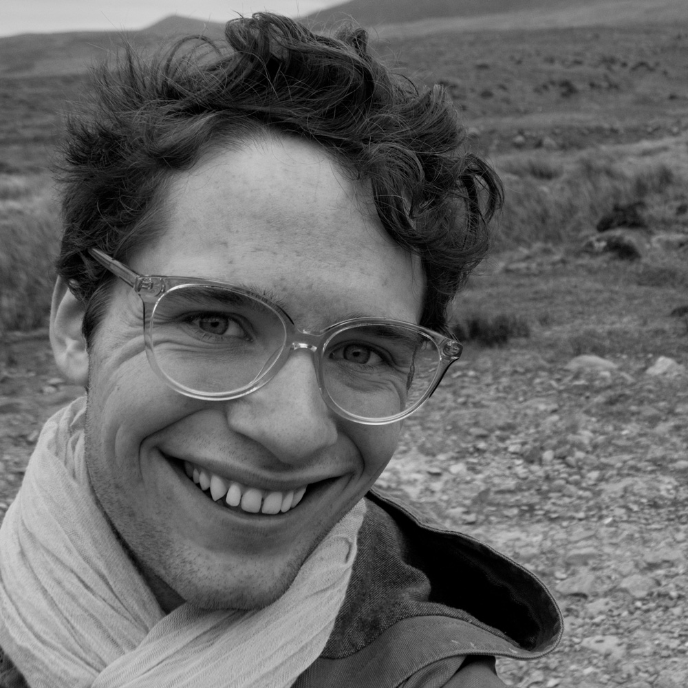

Dominic Burkart is a researcher and artist currently living in Paris. They are expected to graduate in May 2017 with a BA in Psychology from New York University. CV
Network Analyst / RA
Jay Van Bavel Lab
Founder / Curator
Standard Deviation